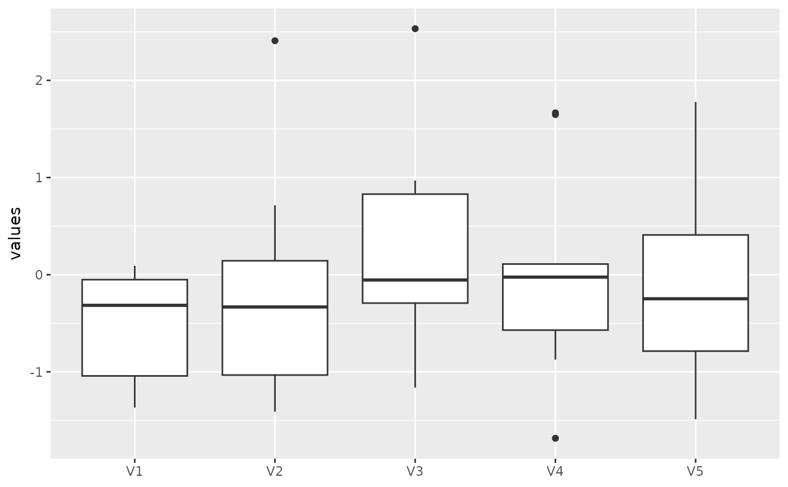
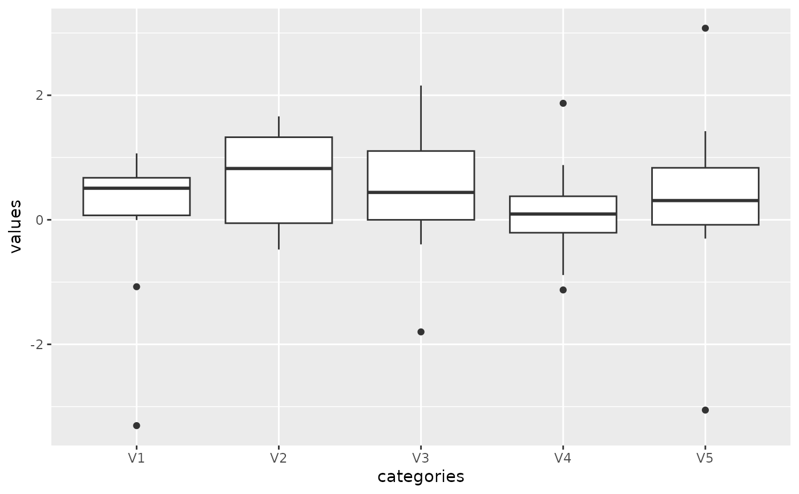
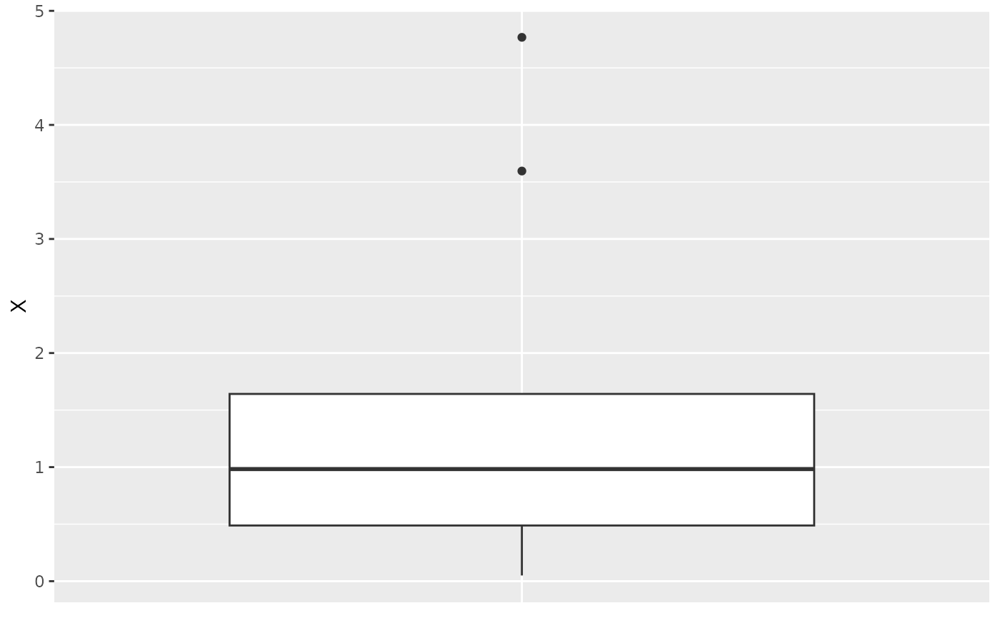
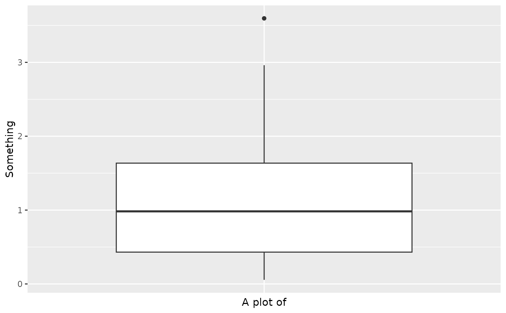
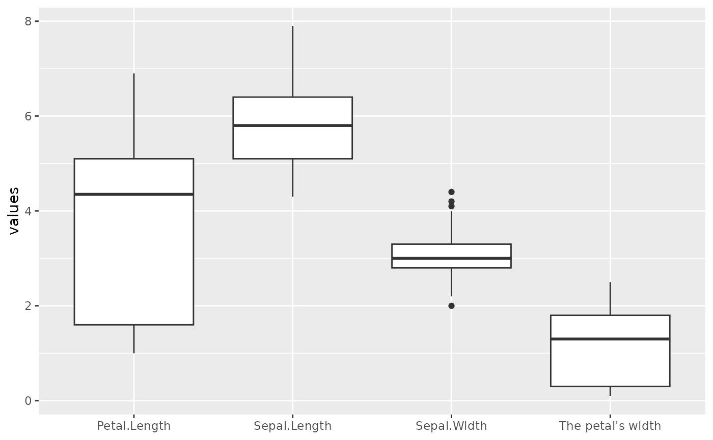
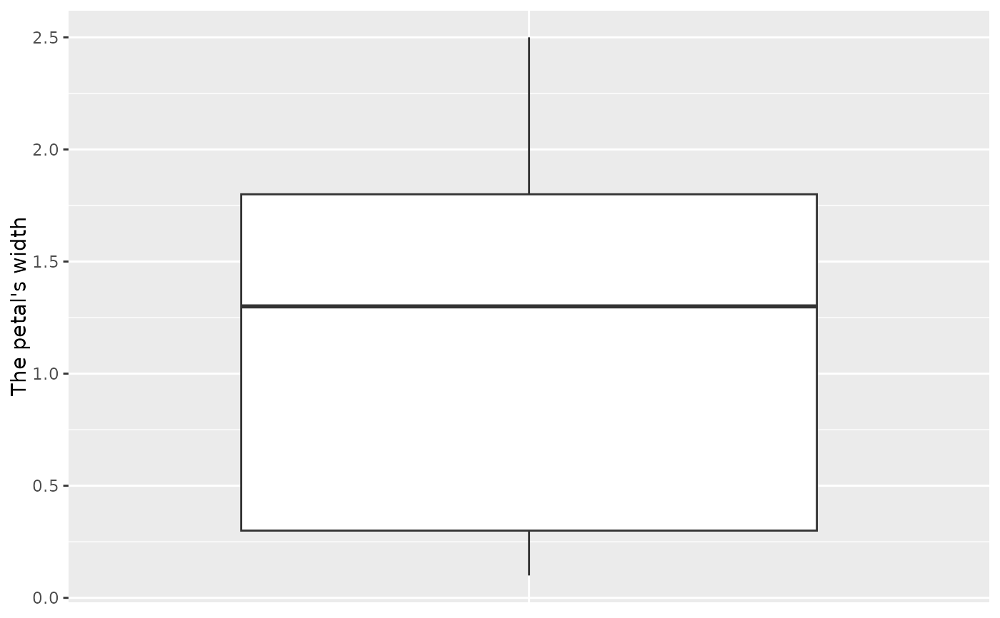
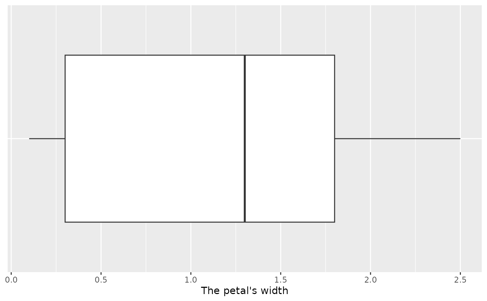
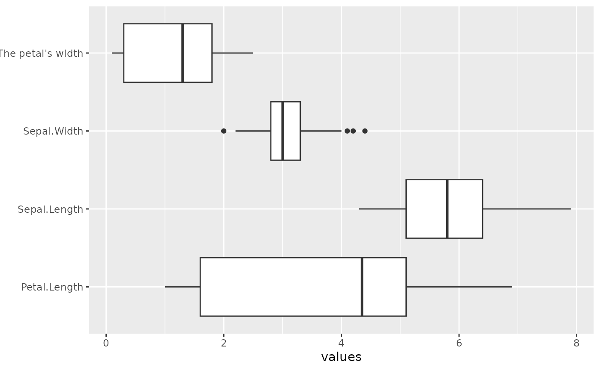

Boxplot of a data frame / matrix using ggplot
ggbox.RdWorks with labels, as from the labelled package. Axis labels are handled
somewhat differently depending on whether a single box is present or multiple.
Examples
ggbox(matrix(rnorm(50), 10, 5))

ggbox(matrix(rnorm(50), 10, 5), xlab='categories')

ggbox(rexp(10))

ggbox(rexp(10), 'A plot of') + ggplot2::ylab('Something')

# Using labels
X <- iris[, 1:4]
attr(X[[4]], 'label') <- "The petal's width"
ggbox(X)

ggbox(X[,4])

ggbox(X[,4], horiz=TRUE)

ggbox(X, horiz=TRUE)
